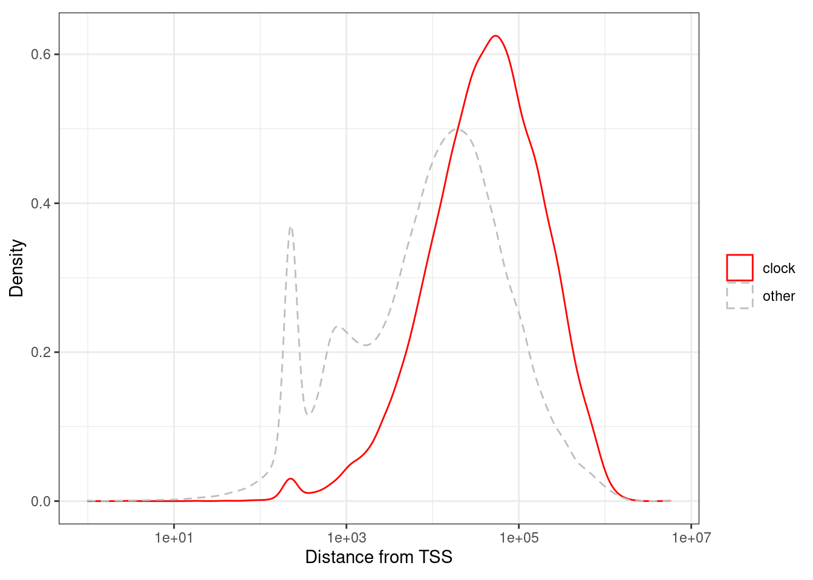
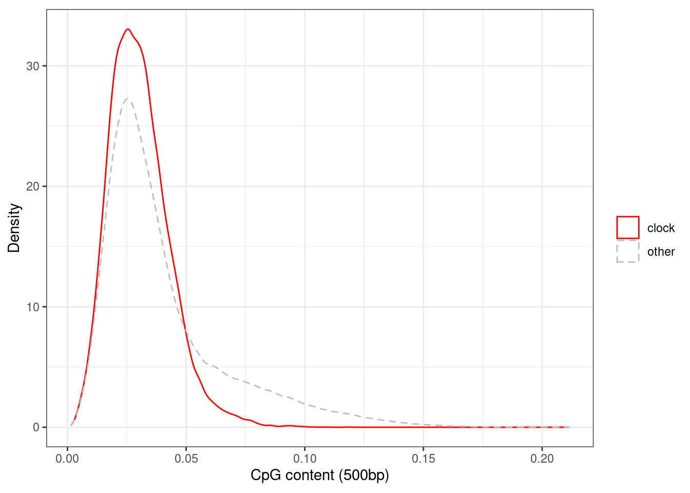
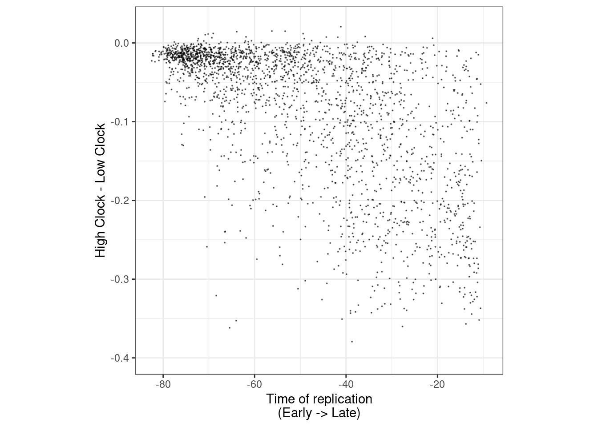

5 Loss clock
5.1 Introduction
We continue to characterize the highly correlated group of CpGs (see Epigenomic-scores notebook) we termed loss clock.
5.2 Initialize
source(here::here("scripts/init.R"))5.3 Plot methylation distribution of the clock
df_sum <- fread(here("data/epigenomic_features_raw_meth.tsv")) %>% filter(!is.na(ER)) %>% as_tibble() 5.3.0.1 Figure 1i
options(repr.plot.width = 4, repr.plot.height = 4)
p_avg_clock <- df_sum %>%
ggplot(aes(x=clock, color=ER)) +
geom_density() +
scale_color_manual(values = annot_colors$ER1) +
theme(aspect.ratio = 1) +
ylab("Density") +
xlab("Clock avg. methylation") +
coord_cartesian(xlim=c(0.4, 1))
p_avg_clock + theme_bw() + theme(aspect.ratio = 0.9) ks.test(df_sum[df_sum$ER == "ER+", ]$clock, df_sum[df_sum$ER == "normal", ]$clock)##
## Two-sample Kolmogorov-Smirnov test
##
## data: df_sum[df_sum$ER == "ER+", ]$clock and df_sum[df_sum$ER == "normal", ]$clock
## D = 0.73803, p-value < 2.2e-16
## alternative hypothesis: two-sidedks.test(df_sum[df_sum$ER == "ER-", ]$clock, df_sum[df_sum$ER == "normal", ]$clock)##
## Two-sample Kolmogorov-Smirnov test
##
## data: df_sum[df_sum$ER == "ER-", ]$clock and df_sum[df_sum$ER == "normal", ]$clock
## D = 0.68317, p-value < 2.2e-16
## alternative hypothesis: two-sided5.4 Annotate "clock" score
5.4.1 Loci annotation
loci_annot <- fread(here("data/loci_annot_epigenomic_features.tsv")) %>% as_tibble()cor_thresh <- 0.65.4.1.1 Figure 1k
options(repr.plot.width = 4, repr.plot.height = 4)
p_tss_d <- loci_annot %>%
mutate(type = ifelse(clock >= cor_thresh, "clock", "other")) %>%
ggplot(aes(x=abs(tss_d), color=type, linetype = type)) +
geom_density() +
xlab("Distance from TSS") +
ylab("Density") +
scale_color_manual(name = "", values=c(clock = "red", other = "gray")) +
scale_x_log10(label=scales::scientific) +
scale_linetype_manual(name = "", values=c(clock = "solid", other = "dashed")) +
theme(aspect.ratio = 0.8)
p_tss_d + theme_bw() + theme(aspect.ratio = 0.8)## Warning: Transformation introduced infinite values in continuous x-axis## Warning: Removed 21 rows containing non-finite values (stat_density).
loci_annot %>%
mutate(type = ifelse(clock >= cor_thresh, "clock", "other")) %>%
summarise(pval = ks.test(abs(tss_d)[type == "clock"], abs(tss_d)[type == "other"])$p.value)## Warning in ks.test(abs(tss_d)[type == "clock"], abs(tss_d)[type == "other"]): p-
## value will be approximate in the presence of ties## # A tibble: 1 x 1
## pval
## 1 05.4.1.2 Figure 1l
options(repr.plot.width = 4, repr.plot.height = 4)
p_tor <- loci_annot %>%
mutate(type = ifelse(clock >= cor_thresh, "clock", "other")) %>%
ggplot(aes(x=-tor, color=type, linetype = type)) +
geom_density() +
xlab("Time of replication") +
ylab("Density") +
scale_color_manual(name = "", values=c(clock = "red", other = "gray")) +
scale_x_continuous(breaks = c(-80, 0), labels = c("Early", "Late")) +
scale_linetype_manual(name = "", values=c(clock = "solid", other = "dashed")) +
theme(aspect.ratio = 0.8)
p_tor + theme_bw() + theme(aspect.ratio = 0.8)## Warning: Removed 28 rows containing non-finite values (stat_density).loci_annot %>%
mutate(type = ifelse(clock >= cor_thresh, "clock", "other")) %>%
summarise(pval = ks.test(-tor[type == "clock"], -tor[type == "other"])$p.value)## Warning in ks.test(-tor[type == "clock"], -tor[type == "other"]): p-value will
## be approximate in the presence of ties## # A tibble: 1 x 1
## pval
## 1 05.4.1.3 Extended Data Figure 4d
options(repr.plot.width = 4, repr.plot.height = 4)
p_cg_cont_d <- loci_annot %>%
mutate(type = ifelse(clock >= cor_thresh, "clock", "other")) %>%
ggplot(aes(x=cg_cont, color=type, linetype = type)) +
geom_density() +
xlab("CpG content (500bp)") +
ylab("Density") +
scale_color_manual(name = "", values=c(clock = "red", other = "gray")) +
scale_linetype_manual(name = "", values=c(clock = "solid", other = "dashed")) +
theme(aspect.ratio = 0.8)
p_cg_cont_d + theme_bw() + theme(aspect.ratio = 0.8)## Warning: Removed 8 rows containing non-finite values (stat_density).
loci_annot %>%
mutate(type = ifelse(clock >= cor_thresh, "clock", "other")) %>%
summarise(pval = ks.test(cg_cont[type == "clock"], cg_cont[type == "other"])$p.value)## Warning in ks.test(cg_cont[type == "clock"], cg_cont[type == "other"]): p-value
## will be approximate in the presence of ties## # A tibble: 1 x 1
## pval
## 1 05.4.1.4 Extended Data Figure 4c
options(repr.plot.width = 4, repr.plot.height = 4)
k4me1_names <- grep("k4me1", colnames(loci_annot))
clock_loci_annot <- loci_annot %>%
mutate(type = ifelse(clock >= cor_thresh, "clock", "other")) %>%
mutate(
enh = matrixStats::rowAnys((loci_annot[, k4me1_names] > 0.97), na.rm = TRUE),
polycomb = k27me3 > 0.97
) %>%
mutate(context = case_when(polycomb ~ "K27me3 peaks", enh ~ "K4me1 peaks", TRUE ~ "Background"))
p_enh_polycomb <- clock_loci_annot %>%
count(type, context) %>%
group_by(type) %>%
mutate(frac = n / sum(n)) %>%
ggplot(aes(x = context, y = frac, fill = type)) +
geom_col(position = "dodge") +
scale_fill_manual("", values = c(other = "gray", clock = "red")) +
scale_y_continuous(label = function(x) scales::percent(x, accuracy = 1)) +
ylab("Percent of sites") +
xlab("") +
guides(fill = FALSE) +
vertical_labs() +
theme(aspect.ratio = 0.8)## Warning: `guides(<scale> = FALSE)` is deprecated. Please use `guides(<scale> =
## "none")` instead.p_enh_polycomb + theme_bw() + theme(aspect.ratio = 0.8)chisq.test(clock_loci_annot$type, clock_loci_annot$context)##
## Pearson's Chi-squared test
##
## data: clock_loci_annot$type and clock_loci_annot$context
## X-squared = 4794, df = 2, p-value < 2.2e-165.4.2 Clinical annotation
feats <- fread(here("data/epigenomic_features.tsv")) %>%
mutate(ML = -ML, clock = -clock, immune.meth = -immune.meth, caf.meth = -caf.meth) %>% as_tibble()
nbins <- 5
df <- feats %>%
mutate(
clock = cut(clock, quantile(clock, 0:nbins/nbins, na.rm=TRUE), include.lowest=TRUE, labels=1:nbins)) %>%
left_join(samp_data %>% select(samp, stage, grade), by = "samp") %>%
mutate(stage = ifelse(stage %in% c(0, "DCIS", 1), "0-1", stage)) %>%
mutate(stage = ifelse(ER == "normal", "N", stage)) %>%
mutate(grade = ifelse(ER == "normal", "N", grade))df_pval <- df %>% filter(ER %in% c("ER+", "ER-")) %>% gather("feat", "bin", -samp, -ER, -stage, -grade) %>% filter(feat == "clock") %>% group_by(ER, feat) %>% summarise(grade_pval = chisq.test(bin, grade)$p.value, stage_pval = chisq.test(bin, stage)$p.value) ## Warning: attributes are not identical across measure variables;
## they will be dropped## Warning in chisq.test(bin, grade): Chi-squared approximation may be incorrect## Warning in chisq.test(bin, stage): Chi-squared approximation may be incorrect
## Warning in chisq.test(bin, stage): Chi-squared approximation may be incorrectas.data.frame(df_pval)## ER feat grade_pval stage_pval
## 1 ER- clock 0.6348596 0.07094066
## 2 ER+ clock 0.1471181 0.57227178df_pval %>% filter(grade_pval <= 0.05)## # A tibble: 0 x 4
## # groups: ER
## [1] ER feat grade_pval stage_pval
## <0 rows> (or 0-length row.names)df_pval %>% filter(stage_pval <= 0.05)## # A tibble: 0 x 4
## # groups: ER
## [1] ER feat grade_pval stage_pval
## <0 rows> (or 0-length row.names)options(repr.plot.width = 6, repr.plot.height = 4)
p_stage_clock <- df %>%
filter(ER == "ER+") %>%
mutate(stage = factor(stage, levels = c("N", "0-1", "2", "3", "4"))) %>%
filter(!is.na(stage)) %>%
count(stage, clock) %>%
group_by(clock) %>%
mutate(p = n / sum(n)) %>%
ggplot(aes(x=clock, y=p, fill=stage)) +
geom_col() +
scale_fill_manual(name = "Stage", values = c("N" = "gray", "0-1" = "black", "2" = "blue", "3" = "red", "4" = "orange")) +
scale_y_continuous(labels=scales::percent) +
ylab("% of samples")
p_stage_clock + theme_bw()5.4.2.1 Figure 1j
options(repr.plot.width = 6, repr.plot.height = 4)
p_grade_clock_positive <- df %>%
filter(ER == "ER+") %>%
mutate(grade = factor(grade, levels = c("N", "1", "2", "3"))) %>%
filter(!is.na(grade)) %>%
count(grade, clock) %>%
group_by(clock) %>%
mutate(p = n / sum(n)) %>%
ggplot(aes(x=clock, y=p, fill=grade)) +
geom_col() +
scale_fill_manual(name = "Grade", values = c("N" = "gray", "1" = "darkblue", "2" = "red", "3" = "orange")) +
scale_y_continuous(labels=scales::percent) +
ylab("% of samples")
p_grade_clock_negative <- df %>%
filter(ER == "ER-") %>%
mutate(grade = factor(grade, levels = c("N", "1", "2", "3"))) %>%
filter(!is.na(grade)) %>%
count(grade, clock) %>%
group_by(clock) %>%
mutate(p = n / sum(n)) %>%
ggplot(aes(x=clock, y=p, fill=grade)) +
geom_col() +
scale_fill_manual(name = "Grade", values = c("N" = "gray", "1" = "darkblue", "2" = "red", "3" = "orange")) +
scale_y_continuous(labels=scales::percent) +
ylab("% of samples")
p_grade_clock_positive + theme_bw()p_grade_clock_negative + theme_bw()5.5 Plot chromosomal traces of clock score
We separate the samples to tumors with high and low clock score (top and bottom 30%). We then look at average methylation in bins of 10K along the chromosome.
We smooth the methylation traces with rolling average of 50 bins.
5.5.0.1 Figure 1m
options(repr.plot.width = 14, repr.plot.height = 5)
p_trace <- plot_tor_clock_chrom_track("chr1", "ER+", iterator=1e4)## Warning: `guides(<scale> = FALSE)` is deprecated. Please use `guides(<scale> =
## "none")` instead.
## Warning: `guides(<scale> = FALSE)` is deprecated. Please use `guides(<scale> =
## "none")` instead.## Warning: Removed 147 row(s) containing missing values (geom_path).p_trace$p + coord_cartesian(ylim = c(0.25, 0.77))## Coordinate system already present. Adding new coordinate system, which will replace the existing one.
5.5.0.2 Extended Data Figure 4f
options(repr.plot.width = 14, repr.plot.height = 5)
p_trace_chr10 <- plot_tor_clock_chrom_track("chr10", "ER+", iterator=1e4)## Warning: `guides(<scale> = FALSE)` is deprecated. Please use `guides(<scale> =
## "none")` instead.
## Warning: `guides(<scale> = FALSE)` is deprecated. Please use `guides(<scale> =
## "none")` instead.## Warning: Removed 147 row(s) containing missing values (geom_path).p_trace_chr10$p + coord_cartesian(ylim = c(0.1, 0.77))## Coordinate system already present. Adding new coordinate system, which will replace the existing one.5.6 Correlation of gene expression to clock
We calculate the correlation of all the genes to the clock score.
feat_gene_cors <- get_expression_features_cors()5.6.0.1 Extended Data Figure 5a
options(repr.plot.width = 4, repr.plot.height = 7)
top_genes <- feat_gene_cors %>%
filter(ER == "ER+") %>%
arrange(-clock) %>%
slice(1:25)
p_top_genes <- top_genes %>%
ggplot(aes(x = reorder(name, clock), y = clock, fill = ER)) +
geom_col() +
scale_fill_manual("", values = annot_colors$ER1) +
guides(fill = "none") +
ylim(0, 0.5) +
xlab("") +
ylab("ER+") +
coord_flip() +
ggtitle("Correlation of\nexpression with\nclock score") +
theme(plot.title = element_text(hjust = 0.5))
p_top_genes + theme_bw() + theme(plot.title = element_text(hjust = 0.5)) 5.6.0.2 Extended Data Figure 5b
gene_feat_df <- get_gene_features_df(c("MAGEC2", "PAGE5")) %>% filter(!is.na(clock))options(repr.plot.width = 7, repr.plot.height = 4)
p_mage_page <- gene_feat_df %>%
filter(ER != "normal") %>%
mutate(ER = factor(ER, levels=c("ER+", "ER-"))) %>%
ggplot(aes(x=clock, y=expr, color=ER)) +
geom_point(size=0.2) +
xlab("Clock") +
scale_color_manual(values=annot_colors$ER1) +
ylab("Gene expression") +
facet_wrap(ER~name, scales="free_y", nrow=1) +
theme(aspect.ratio = 1) +
guides(color="none")
p_mage_page + theme_bw() + theme(aspect.ratio = 1)5.7 Plot score in different TOR regimes
all_mat_raw <- get_all_meth() %>% intervs_to_mat()tor_strata <- loci_annot %>% mutate(tor_strata = cut(tor, breaks = main_config$genomic_regions$tor_low_mid_high, labels=c("late", "intermediate", "early"))) %>% pull(tor_strata) %>% forcats::fct_explicit_na()samp_meth_tor <- tgs_matrix_tapply(t(all_mat_raw), tor_strata, mean, na.rm=TRUE) %>% t() %>% as.data.frame() %>% rownames_to_column("samp") %>% add_ER() %cache_df% here("data/samp_meth_tor.tsv") %>% as_tibble()5.7.0.1 Extended Data Figure 4e
options(repr.plot.width = 9, repr.plot.height = 4)
p_early_late <- samp_meth_tor %>%
filter(ER != "normal") %>%
ggplot(aes(x=early, y=late, color=ER)) +
geom_abline(linetype = "dashed") +
geom_point(size=0.1) +
xlim(0.1, 0.9) +
ylim(0.1, 0.9) +
scale_color_manual(values=annot_colors$ER1) +
theme(aspect.ratio = 1)
p_mid_early <- samp_meth_tor %>%
filter(ER != "normal") %>%
ggplot(aes(x=early, y=intermediate, color=ER)) +
geom_abline(linetype = "dashed") +
geom_point(size=0.1) +
xlim(0.1, 0.9) +
ylim(0.1, 0.9) +
scale_color_manual(values=annot_colors$ER1) +
theme(aspect.ratio = 1)
samp_meth_tor %>% filter(ER != "normal") %>% summarise(cor_early_late = cor(early, late, method = "spearman", use = "pairwise.complete.obs"), cor_early_mid = cor(early, intermediate, method = "spearman", use = "pairwise.complete.obs"))## # A tibble: 1 x 2
## cor_early_late cor_early_mid
## 1 0.5723737 0.7680809(p_early_late + theme_bw() + theme(aspect.ratio = 1) ) + (p_mid_early + theme_bw() + theme(aspect.ratio = 1) )5.8 Plot High-Low clock tumors vs TOR
5.8.0.1 Extended Data Figure 4g
options(repr.plot.width = 4, repr.plot.height = 4)
df <- get_tor_clock_chrom_trace("chr1", "ER+", 1e5) %>%
filter(high_loss_n >= 50, low_loss_n >= 50) %>%
filter(!is.na(tor), !is.na(high_loss), !is.na(low_loss))
cor(-df$tor, df$high_loss - df$low_loss, method = "spearman")## [1] -0.6187326p_tor_high_low <- df %>%
ggplot(aes(x = -tor, y = high_loss - low_loss)) +
geom_point(size=0.05, alpha=0.5) +
theme(aspect.ratio = 1) +
ylim(-0.4, 0.025) +
xlab("Time of replication\n(Early -> Late)") +
ylab("High Clock - Low Clock")
p_tor_high_low + theme_bw() + theme(aspect.ratio = 1)
5.9 Plot correlation of loci to clock methylation
5.9.0.1 Extended Data Figure 4h
options(repr.plot.width = 8, repr.plot.height = 4)
p_loci_cor <- loci_annot %>%
left_join(get_all_summary_meth()) %>%
mutate(normal_meth = cut(normal, c(0,0.3,0.7,1), include.lowest=TRUE)) %>%
ggplot(aes(x=clock)) +
geom_density() +
facet_grid(.~normal_meth) +
ylab("Density") +
xlab("Correlation of loci to clock methylation")## Joining, by = c("chrom", "start", "end")p_loci_cor + theme_bw()5.10 Plot distribution of methylation of clock in normal samples
normal_mat <- get_all_meth() %>%
select(chrom:end, any_of(normal_samples)) %>%
intervs_to_mat()
loci_annot_f <- loci_annot %>%
filter(cg_cont <= 0.02) %>%
mutate(tor = cut(tor, breaks=main_config$genomic_regions$tor_low_mid_high, labels=c("late", "mid", "early"), include.lowest=TRUE)) %>% mutate(tor = forcats::fct_explicit_na(tor)) %>%
intervs_to_mat()
normal_clock <- tgs_matrix_tapply(t(normal_mat[rownames(loci_annot_f), ]), loci_annot_f[, "tor"], mean, na.rm=TRUE) %>%
t() %>%
as.data.frame() %>%
rownames_to_column("samp") %>%
as_tibble()
nrow(loci_annot_f)## [1] 364205.10.0.1 Extended Data Figure 5b
options(repr.plot.width = 4, repr.plot.height = 4)
df <- normal_clock %>%
gather("tor", "meth", -samp) %>%
mutate(tor = factor(tor, levels = c("early", "mid", "late"))) %>%
filter(!is.na(tor)) %>%
mutate(ER = "normal")
p_clock_normal <- df %>%
ggplot(aes(x = tor, y = meth, fill = ER)) +
geom_boxplot(outlier.size=0.1, lwd = 0.5) +
scale_fill_manual(values = annot_colors$ER1) +
theme(aspect.ratio = 1) +
guides(fill = FALSE) +
xlab("Time of replication") +
vertical_labs() +
ylab("Methylation in normal samples\n(CpG content <= 2%)")## Warning: `guides(<scale> = FALSE)` is deprecated. Please use `guides(<scale> =
## "none")` instead.p_clock_normal + theme_bw() + theme(aspect.ratio = 1)
5.11 Compare clock layer to biological age
5.11.0.1 Extended Data Figure 5c
options(repr.plot.width = 12, repr.plot.height = 4)
df <- feats %>%
left_join(samp_data %>% select(samp, age)) ## Joining, by = "samp"df %>% summarise(cor = cor(age, clock, method = "spearman", use = "pairwise.complete.obs"))## # A tibble: 1 x 1
## cor
## 1 0.06042711p_age <- df %>%
ggplot(aes(x=age, y=clock, color=ER)) +
geom_point(size=0.5) +
scale_color_manual(values = annot_colors$ER1) +
theme(aspect.ratio = 1) +
xlab("Biological age") +
ylab("Clock") +
facet_grid(.~ER)
p_age + theme_bw() + theme(aspect.ratio = 1)## Warning: Removed 30 rows containing missing values (geom_point).gc()## used (Mb) gc trigger (Mb) max used (Mb)
## Ncells 4907303 262.1 8028385 428.8 8028385 428.8
## Vcells 834169869 6364.3 1673781729 12770.0 1576695863 12029.3